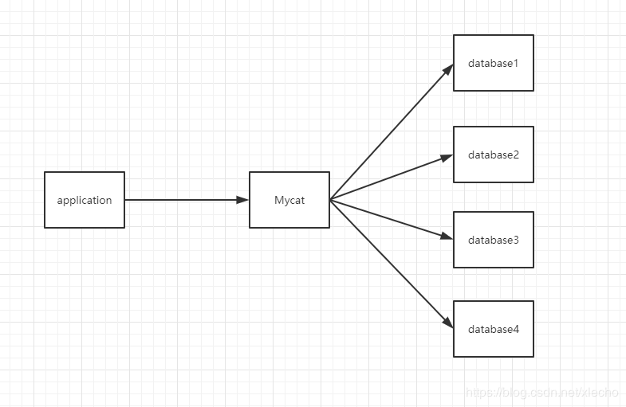
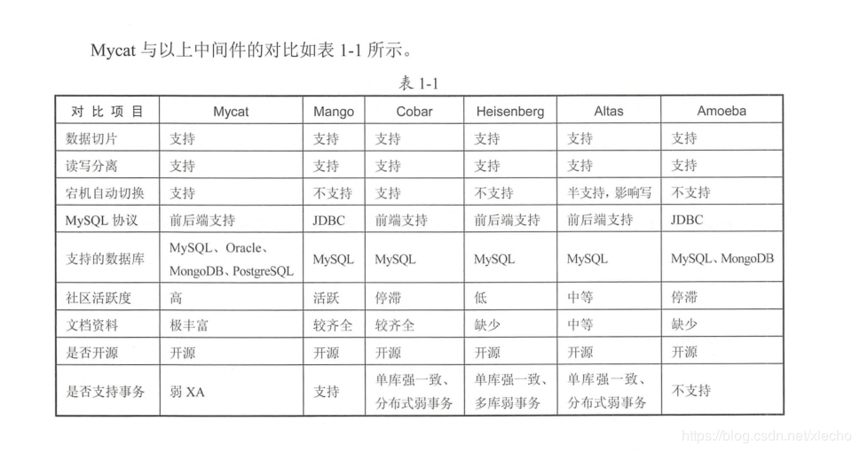

echo编辑整理，欢迎转载，转载请声明文章来源。欢迎添加echo微信(微信号：t2421499075)交流学习。 百战不败，依不自称常胜，百败不颓，依能奋力前行。——这才是真正的堪称强大！！！
如果我有一个32核心的服务器，我就可以实现1亿个的数据分片，我有32核心的服务器么？没有，所以我至今无法实现1个亿的数据分片 --Mycat 's Plan
Mycat并不是一个存储数据的服务器，更像是一个连接各种数据的数据引擎。对于开发人员来说，Mycat就是一款分库分表的工具。只是该工具对于分库分表的性能相对高处很多，而且他不仅仅可以用做分库分表，还能用做读写分离、以及容灾备份。
每一款能够被大众快速接受的框架，或者技术解决方案，基本都有一个共同点。实现起来比较方便，相对来说成本不高，同时原理并不是特别复杂。Mycat作为一款分布式数据库结构的解决方案，它的一个实现原理是比较简单的，其中最为重要的一个操作就是“拦截”。但是它也有很复杂的地方，那就是他的实现代码，如果能够保证实现代码也很简单，那估计就不能保证市场的独有地位了，很容易被取代。
 被称为中间件要从他的一个主要功能说起，那就是分片分库。对于分片分库的所有支持和操作，不管是路由，分发等等都并没有给真是的数据库带来存储的类似存储引擎的作用，只是对保证了多库，分表的数据有效分离和获取。图中的位置就是为了突出Mycat它的一个作用，已经它在我们整个系统架构中间的位置。

该图片来源于《分布式数据库架构及企业实践》，如有侵权，请联系我t2421499075，这是微信号
Mycat它最大的优势在于兼容绝大多数的数据库，同时能够有效的支持读写分离，已经100亿级数据的秒级性能。
做一个有底线的博客主